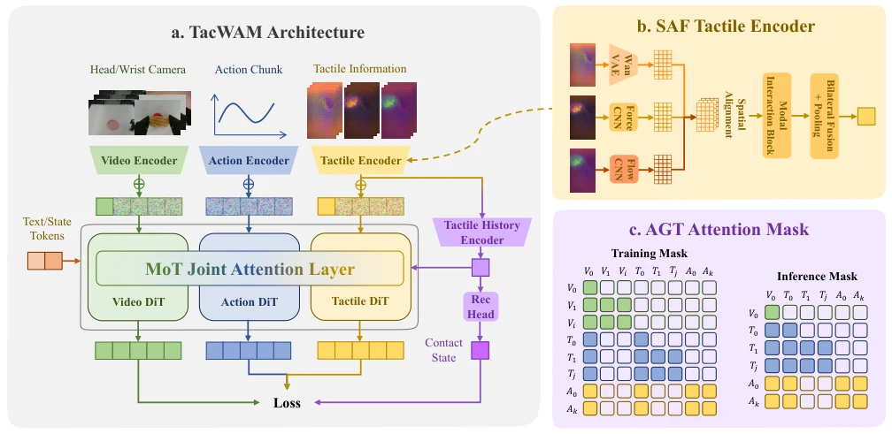
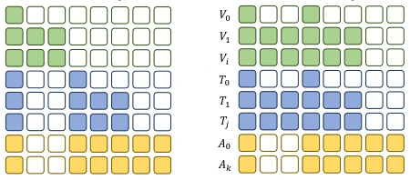
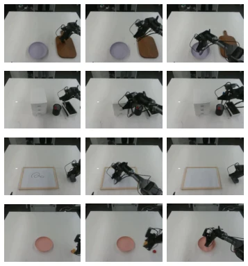
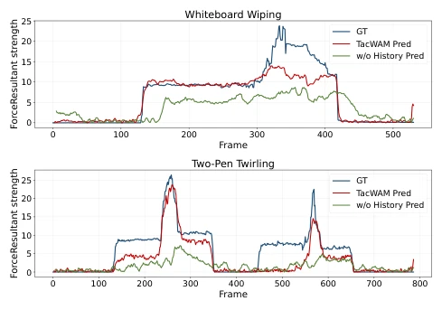

TacWAM: Anchor-Guided World Action Model with Mechanics-Aware Tactile Prediction
Lei Jin, Yiding Ma, Xin Zhang, Chen Gao, Wei Wu, Yong Li abspdf
论文点评Review
这篇 TacWAM 给 World Action Models 补上了触觉这块短板，但最骚的操作不是加了触觉预测，而是搞了个信息隔离。它让模型在训练时能预知未来的力场变化来监督学习，但在执行时却不让动作分支偷看未来的触觉目标，避免了训练测试不一致的作弊嫌疑。虽然成功率高得吓人（75%），但任务集中在接触丰富的操作，对于非接触场景可能有点杀鸡用牛刀。不过，把触觉从单纯的感知信号变成预测目标，这个思路确实比单纯融合更进了一步，证明了物理信息在 WAM 训练中的价值。它没有把触觉当作黑盒，而是通过 SAF 和 AGT 让触觉预测真正服务于力学理解，而非仅仅作为动作的捷径。
This TacWAM fills the tactile gap in World Action Models, but the most ingenious move is not adding tactile prediction, but implementing information isolation. It enables the model to anticipate future force field changes for supervised learning during training, yet prevents the action branch from peeking at future tactile targets during execution, avoiding suspicions of cheating due to training-test inconsistency. Although the success rate is startlingly high (75%), the tasks concentrate on contact-rich operations, which might be overkill for non-contact scenarios. However, transforming tactile from a mere perception signal into a prediction target is indeed a step forward compared to simple fusion, proving the value of physical information in WAM training. It does not treat tactile as a black box, but uses SAF and AGT to ensure tactile prediction truly serves mechanical understanding, rather than merely serving as a shortcut for actions.
研究动机Motivation
现有的 WAM 大多依赖视觉未来状态（Hafner et al. 2021; Han and Yilmaz 2026），但在接触丰富任务中，视觉无法直接反映力、形变或滑动（Lepora 2026）。虽然已有工作利用触觉辅助（Zang et al. 2026; Ye et al. 2025），但往往将未来触觉作为动作输入，导致部署时存在信息泄露风险。本文旨在解决触觉未来状态既要提供物理监督，又不能成为动作生成的特权线索这一矛盾。视觉相似的接触状态可能对应完全不同的力学条件，仅靠视觉无法捕捉力积累或即将发生的滑动，因此需要触觉未来作为训练信号来增强接触感知，同时保证部署时的信息一致性。如果不加隔离，模型可能学会作弊，在测试时无法复现训练时的优势。
Existing WAMs mostly rely on visual future states (Hafner et al. 2021; Han and Yilmaz 2026), but in contact-rich tasks, vision cannot directly reflect force, deformation, or sliding (Lepora 2026). Although existing work utilizes tactile assistance (Zang et al. 2026; Ye et al. 2025), they often treat future tactile as action input, leading to information leakage risks during deployment. This paper aims to resolve the contradiction that tactile future states must provide physical supervision yet cannot become privileged clues for action generation. Visually similar contact states may correspond to completely different mechanical conditions; relying solely on vision cannot capture force accumulation or impending sliding, thus tactile future is required as a training signal to enhance contact perception while ensuring information consistency during deployment. Without isolation, the model may learn to cheat, failing to reproduce training advantages during testing.
The overall process is based on a WAM generator, comprising vision, tactile, and action three streams. There are three core innovations: 1. SAF Tactile Encoder aligns and fuses tactile appearance, force field, and deformation flow, reconstructs dual torque as global supervision, defines a tactile latent prediction space, ensuring local contact patterns and global mechanical information are not lost; 2. Tactile History Encoder summarizes recent interaction changes, eliminates single-frame tactile ambiguity, provides contact stage context, helping the model understand the evolution trends of force and deformation; 3. AGT Attention strictly isolates information flow, action tokens can only access current visual/tactile anchors, unable to read future prediction tokens. During training, tactile future serves as the prediction target; during inference, only current observations are used, ensuring deployment consistency. This design makes tactile prediction a parallel supervision target rather than an action condition, avoiding data leakage, while achieving multimodal joint generation through Flow Matching.

Figure 1: Overview of TacWAM. (a) TacWAM jointly predicts visual futures, future tactile states, and action chunks from deployment-available context. (b) The Spatially Aligned Fusion (SAF) Tactile Encoder constructs the tactile latent prediction space from tactile appearance, dense force fields, and mesh deformation flow, with global wrench supervision. (c) Anchor- Guided Tri-Modal (AGT) Attention separates observable anchors, future prediction targets, and action tokens.

Figure 3: Attention-mask variants used in the joint-training ablations. Attn-AT allows action tokens to read the full tac- tile prediction sequence T0:H. Attn-VT includes Attn-AT and further enables bidirectional interaction between visual fu- ture tokens and tactile future tokens.
Tested on 4 real-world contact tasks (e.g., chip grasping, whiteboard wiping), 20 trials/task. Compared to baselines such as π0.5 and Fast-WAM, TacWAM achieved an average success rate of 75%, leading the strongest baseline by 37.5 percentage points. Ablation experiments show that removing tactile history causes the success rate to drop to 55%; if the AGT attention mask is relaxed (allowing actions to read future tactile), performance plummets to 7.5%, proving the critical role of history context and information isolation mechanisms. Prediction results also show that TacWAM can track force magnitude and trends more accurately, verifying the effectiveness of tactile prediction. Especially in whiteboard wiping and dual pen rotation tasks, the torque reconstruction curves of tactile prediction highly match the ground truth, indicating the model truly learned mechanical dynamics rather than merely imitating vision.

Figure 2: Real-world evaluation tasks. The figure shows the text prompts and overhead-camera observations for the four contact-rich manipulation tasks used in our experiments.

Figure 4: Representative episode-level tactile prediction roll- outs on whiteboard wiping and two-pen twirling. We recon- struct the bilateral resultant wrench from predicted tactile states, compute the resultant force magnitude, and compare TacWAM and w/o History predictions with ground truth over complete episodes.